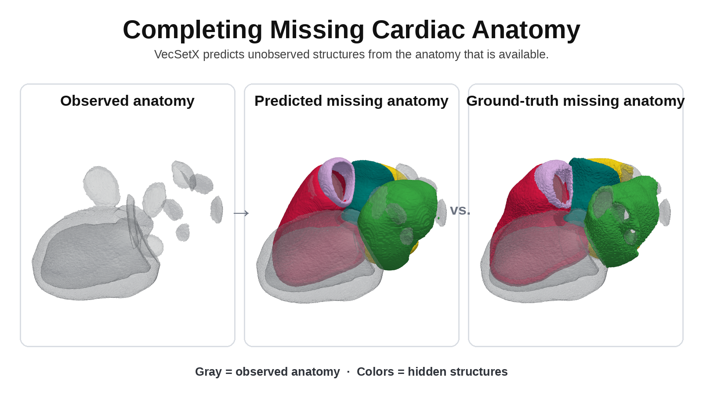

VecSetX
3D anatomical representation and completion from partial observations

VecSetX studies how generative 3D models can infer missing anatomical structures from incomplete observations across heterogeneous medical imaging datasets.
My work: I contributed to building and validating a unified 30-class anatomical representation across multiple data sources, designing leak-safe completion experiments, and analyzing whether conditional generative models genuinely use the available anatomical context.
The project is being developed into a manuscript for submission to CVPR 2027. I am a co-first author.